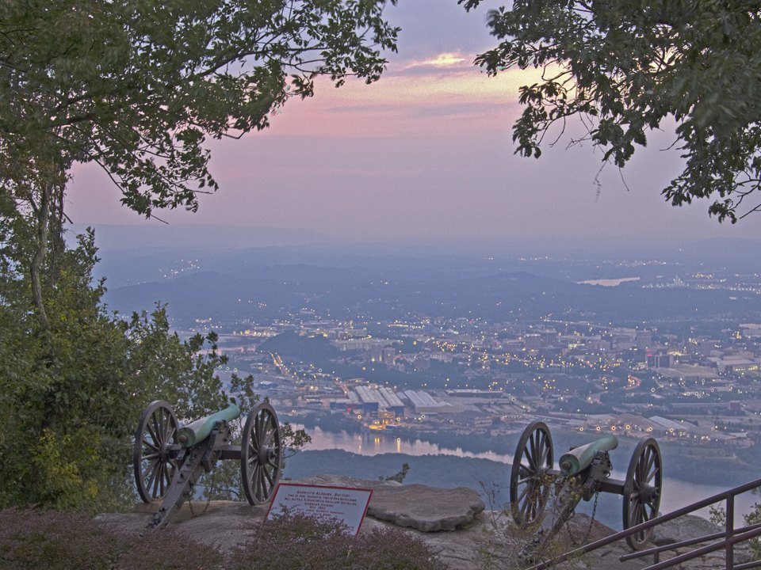

Riverfront · Autograph Collection
The Edwin Hotel
A boutique hotel on the river between the Aquarium and the Hunter Museum, with a rooftop bar and views of the Walnut Street Bridge. The romantic choice.
Official details for The Edwin HotelA river city with a mountain view.
Chattanooga wraps around a bend of the Tennessee River below Lookout Mountain. Walk the riverfront and the pedestrian Walnut Street Bridge, ride the steep Incline Railway to the top of the mountain, and finish with dinner at some of the best restaurants in the state.

Time illustration: direct distance at 150 KTAS plus 15 minutes for departure and arrival, matching the discovery page. Use ForeFlight for your actual flight plan.
Check the weekend weather at both ends → Flight category, your minimums and the crosswind on the best runway.
Checked Nov 2026. Crew cars and pilot perks change often: call the FBO before you go. Know something we missed? Tell us.
KCHA, Chattanooga Metropolitan (Lovell Field), is a towered airport east of downtown with one full-service FBO.
932 Jubilee Drive, Chattanooga, TN 37421
Directories list a courtesy car or shuttle van and rental cars at Wilson Air Center. Arrange ground transport ahead; there is no rideshare pickup on the general aviation ramp. Ask about two-night parking and fees. No live fuel price is shown.
KCHA sits in Class C airspace among ridges, with Lookout Mountain and Signal Mountain nearby. Review terrain, the sectional and current NOTAMs.
A riverfront hotel, a grand historic one, or a stylish small one. Rates and availability need travel dates.
A boutique hotel on the river between the Aquarium and the Hunter Museum, with a rooftop bar and views of the Walnut Street Bridge. The romantic choice.
Official details for The Edwin HotelA grand downtown hotel with roots in the 1870s, restored with Jazz Age glamour and an excellent bar. Walk to dinner.
Official details for The Read HouseA small, colorful boutique hotel in a restored historic building, with a cocktail bar and a retro-modern feel.
Official details for The Dwell HotelThe Edwin is already the city’s romantic choice. For a step up, ask for a river-view suite overlooking the Walnut Street Bridge.
Official details for The Edwin suitesA restored Victorian mansion turned bed and breakfast in a quiet historic neighborhood near downtown. Intimate and romantic.
Official details for Mayor’s Mansion InnPrices and availability for your dates, through our partner Stay22. This is an affiliate link: we may earn a commission at no cost to you. The picks above are never paid.
Chattanooga punches well above its size for food. Reserve weekend dinners.
A polished downtown bistro known for seafood, oysters and a lively bar. An easy, festive first night.
Official details for Easy Bistro & BarSeasonal Southern fine dining in a formal downtown room, with an award-winning wine list. The special-occasion dinner.
Official details for St. John’s RestaurantAn inventive Levantine-inspired tasting menu, one of the city’s most talked-about tables. Book well ahead.
Official details for CalliopeChoose one outing a day and leave time for the riverfront.
Ride the Incline Railway, one of the steepest passenger railways in the world, to the top. Nearby, Rock City’s gardens and lookouts and the underground waterfall at Ruby Falls make a full morning.
A long pedestrian bridge across the Tennessee River to Coolidge Park, shops and cafés. Best at sunset.
Two buildings on the riverfront, following the water from the Appalachian mountains to the sea. Allow two to three hours.
Aquarium ticketsAmerican art in a museum on a bluff over the river, with a sculpture garden, cafés and a walking path nearby.
The restored 1909 Terminal Station on the Southside, with gardens, restaurants and the classic train. Fun for a stroll and a drink.
Chattanooga Choo ChooThis prototype links to the city calendar. It does not yet match events to your travel dates.
Chattanooga’s big riverfront music festival. Fun and crowded; book lodging early.
Official details for Riverbend FestivalThe ridges around the city turn in mid-to-late October. The views from Lookout Mountain are at their best.
Rock City’s holiday light show on top of Lookout Mountain. Timed tickets often sell out.
Official details for Rock City lightsCheck the city calendar when choosing a weekend, and confirm dates and tickets with the organizer.
A sample Friday–Sunday weekend: the riverfront, the mountain and two excellent dinners. No bookings or availability confirmed.
Land at KCHA mid-morning and head downtown.
The Incline Railway up Lookout Mountain and lunch at the top.
A walk across the Walnut Street Bridge, then back to the FBO.
Land at KCHA, subject to weather and your actual flight plan, and head downtown.
Check in, then walk the Walnut Street Bridge to the North Shore.
Dinner at Easy Bistro & Bar.
The Incline Railway to Lookout Mountain, then Rock City or Ruby Falls.
Lunch on the Southside and the Hunter Museum or the Aquarium.
Dinner at St. John’s, then a nightcap at your hotel’s bar.
Brunch and a walk through the Bluff View Art District.
Return the car or ride to the FBO, and allow time for departure.
Let weather and your flight plan set the departure.
The Tennessee Aquarium.
Ruby Falls, or a drive up Signal Mountain for the views.
The tasting menu at Calliope.
These details make the difference between an appealing list and a usable getaway.
Lodging and ground transport first, then dinners and attraction tickets.
Rock City, Ruby Falls and the Incline often use timed entry on busy weekends. Book ahead.
Ridges surround the city. Brief the departure and arrival with terrain in mind.
Rates and restaurant hours are date-dependent. No availability or live price is implied here.
Picks and links reviewed by WingAway Weekends. Hours, prices, menus and availability change often, so confirm directly with each place before booking. Spotted something out of date, or have a favorite we missed? Email us at hello@wingawayweekends.com.
WingAway Weekends helps you discover the destination. Use ForeFlight and current official aviation information for route, performance, weather, NOTAMs and preflight decisions. Flight planning and PIC responsibility stay with the pilot.